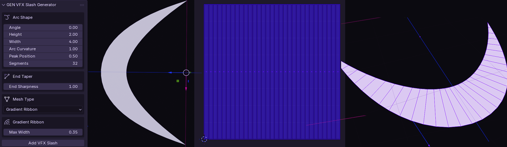

GEN VFX Slash
generate a parabola mesh for vfx slash effects

Metadata
generate a parabola mesh for vfx slash effects
Parabola Slash Mesh Generator
Generates a parabola-shaped mesh for VFX slash effects common in game combat animations. Supports three mesh types: gradient-width ribbon (sharp at ends, wide in center), curved tube, or simple line. Configurable angle, height, width, segment count, gradient width, curve radius, and cross-section resolution. Includes per-mesh-type UV mapping.
VFX SLASH GENERATOR generates a parabola mesh for vfx slash effects useful for game vfx
Properties
| Attr | Label | Type | Default | Range | Subtype / Options | Description |
|---|---|---|---|---|---|---|
angle | Angle | float | 0 | 0 .. 360 | Rotation of the whole arc around the Z axis (degrees). 0 = arc bulges toward +X | |
height | Height | float | 2 | 0.1 .. 10 | Peak bulge of the arc along the forward axis (distance from chord to apex) | |
width | Width | float | 4 | 0.1 .. 10 | Length of the chord (end-to-end span of the slash) | |
arc_curvature | Arc Curvature | float | 1 | 0.1 .. 5 | Shape of the arc bulge. 1.0 = standard parabola, >1.0 = flatter middle with sharper shoulders, <1.0 = rounder dome | |
arc_peak | Peak Position | float | 0.5 | 0 .. 1 | Where the apex sits along the chord (0.0 = left end, 0.5 = centered, 1.0 = right end) | |
segments | Segments | int | 32 | 4 .. 64 | Number of segments along the arc | |
end_sharpness | End Sharpness | float | 1 | 0.1 .. 5 | How pointed the ends/corners are. 1.0 = smooth parabolic taper, >1.0 = sharper points, <1.0 = blunter/rounder ends. Affects ribbon width and tube taper profiles | |
mesh_type | Mesh Type | enum | GRADIENT | Type of mesh to generate | ||
gradient_width | Max Width | float | 0.35 | 0.01 .. 1 | Maximum width of the ribbon at the apex of the arc | |
curve_radius | Max Radius | float | 0.1 | 0.01 .. 0.5 | Maximum radius of the tube at the apex of the arc | |
curve_taper | Taper Amount | float | 0.8 | 0 .. 1 | How much the tube tapers toward the ends (0 = uniform tube, 1 = tapers fully to points at the ends) | |
curve_segments | Cross Sections | int | 8 | 3 .. 32 | Number of segments in the circular cross-section of the tube |
Enum Items
Enum: mesh_type (Mesh Type)
| Identifier | Label | Description |
|---|---|---|
GRADIENT | Gradient Ribbon | Ribbon mesh with gradient width (sharp at ends, wide in center) |
CURVE | Curved Tube | Tube mesh along the slash line with circular cross-section |
LINE | Line | Simple line mesh (vertices and edges only) |
Operators
| Class | bl_idname | Label | Options | Description |
|---|---|---|---|---|
ZENV_OT_VFXSlashAdd | zenv.vfx_slash_add | Add VFX Slash | Create a new VFX slash parabola mesh |